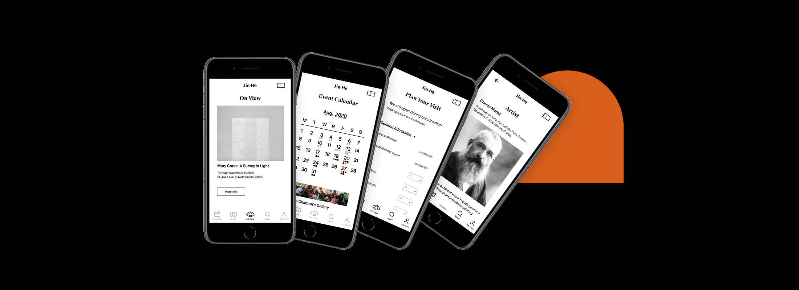

Jin · He
· Branding
· Mobile App Design
2020
The mission of Jin·He gallery is to exhibit contemporary artworks made by Chinese artists, to educate audiences, and to open a window to promote culture. My project below is a mobile app for the cultural institution to better reach out to their visitors, serve their visitors, and create a sound digital brand experience.

Problem
· Museums are depending on the traditional ways to get visitor engagement such as emails and official website. The lack of digital accessibility lessened the interest to visit, purchase tickets, and membership.
· Database is hard to access for research.
· Exhibitions do not provide enough information of art works by the pieces in show rooms.
Solution
· Build a mobile app to make exhibitions info, knowledge of art works and artists, events, online ticket purchasing, membership more accessible to visitors.
· Allow the users to access the database to expand the roles of the institutions.
· Users can search the stop number for individual artwork during their visit, and to learn more about the piece.
User Flow

Functions Mapping

Main Functions
1. Homepage/On View
Current shows and highlighted art pieces

2. Plan Your Visit
Ticket purchasing and museum hours

3. Calendar
Calendar with events highlighted in black and red dots,
representing free events and members excusive events

4. Map
Show floorplan with 3D installation model

5. Learn
Users can search not only stop number but also
artwork, artists, events, and everything

6. Account
Membership log in, purchased tickets, registered events, and all other information

7. Detail Pages
Detailed information of exhibitions, artists, artworks, and established articles from Jin He

Figma Prototype
Visual Identity